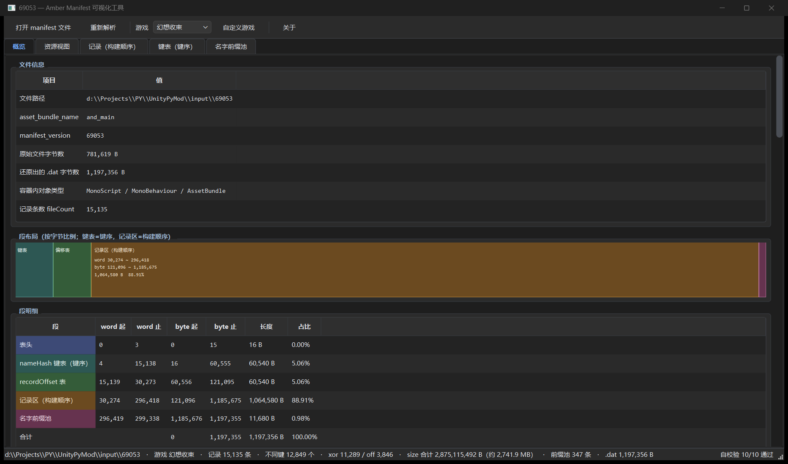
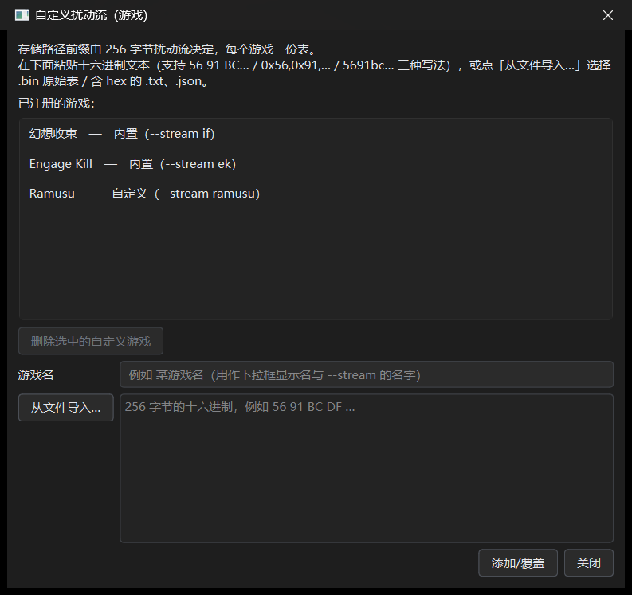
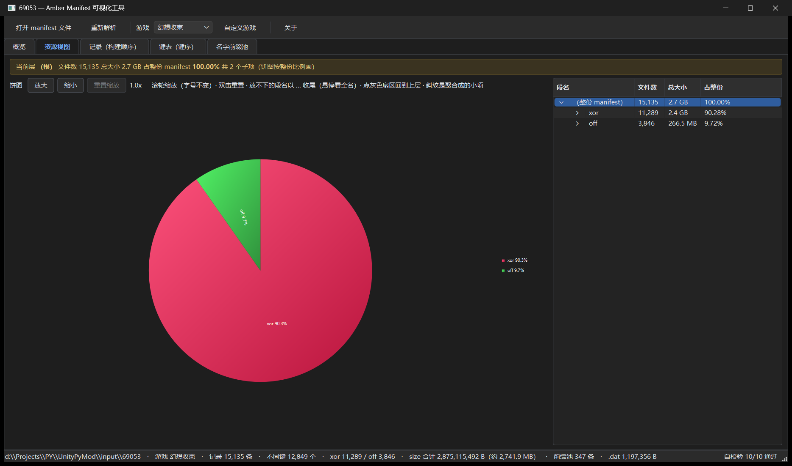
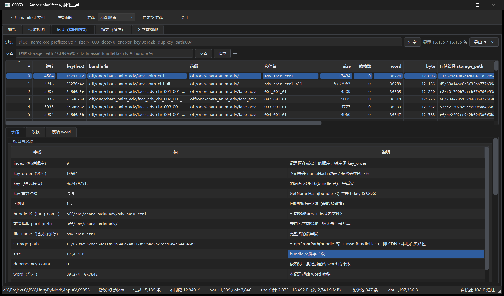
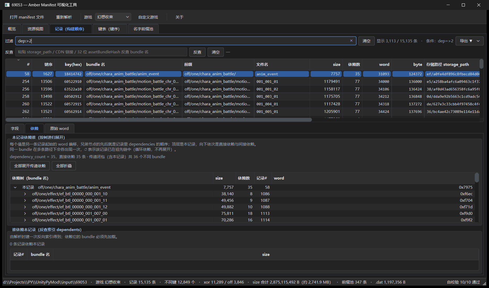
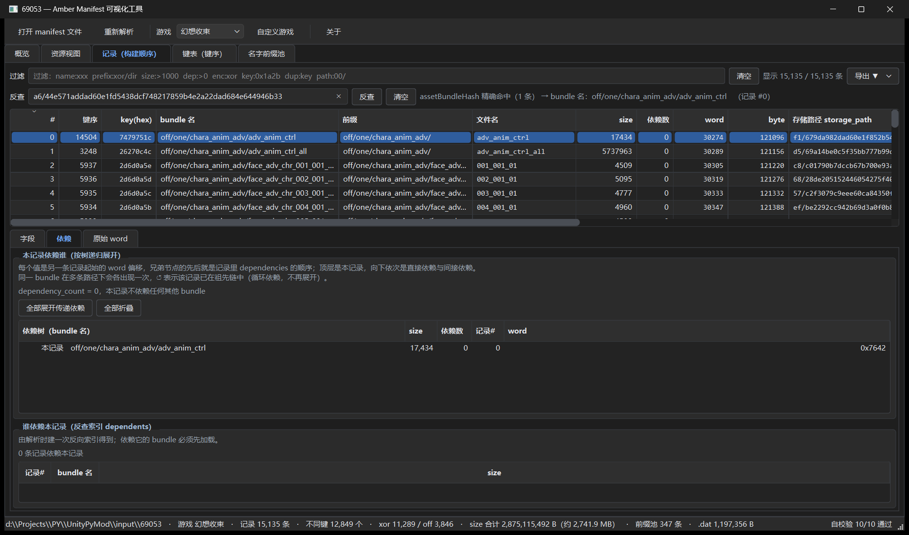
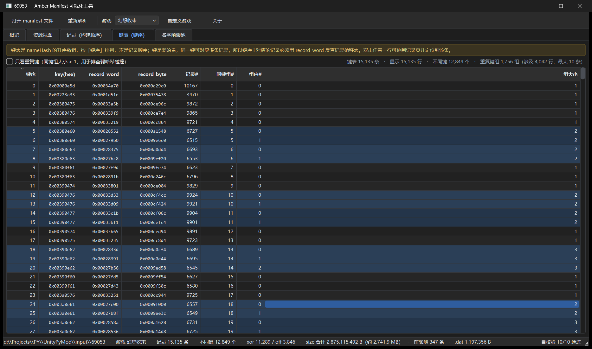
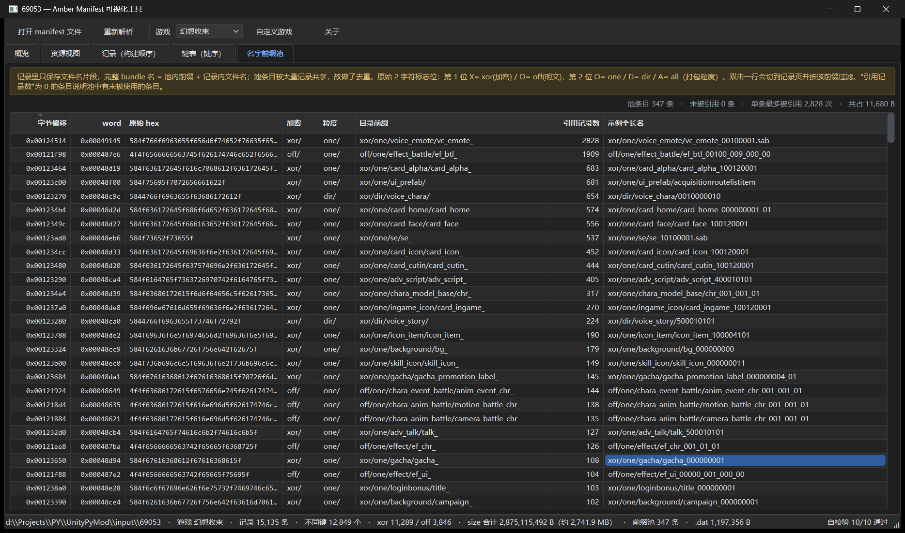

把《魔法禁书目录 幻想收束》的 AssetBundle manifest 拆开看清楚： 五段二进制布局、目录占比、每条记录的存储路径与依赖关系，全在一个窗口里。 本说明只讲 exe 怎么用，不涉及任何编译或源码。
运行 AmberManifestTool.exe。单文件版启动时会自解压，耐心等 5~8 秒，窗口才出现。
把文件 拖进窗口，或按 Ctrl+O 选择。manifest 常没有扩展名，对话框里选「所有文件」即可。
右下角出现 自校验 N/N 通过 说明结构还原无误，再切到「记录」页开始查。

69053 后的第一屏：文件信息、段布局、段明细——15,135 条记录，自校验 10/10 通过。Ctrl+R）即可原地刷新。
Ctrl+O）存储路径 storage_path = getFrontPath(bundle 名) + assetBundleHash，
而 getFrontPath 依赖一张 256 字节扰动表——这张表是 分游戏 的。
选错游戏，前缀整段错，但 bundle 名、size、依赖都不受影响。
| 下拉显示 | --stream 名 | 说明 |
|---|---|---|
| 幻想收束 | if | 默认，内置表 |
| Engage Kill | ek | 内置表 |
| 自定义项 | 你自己填的名字 | 保存在本机设置，重启后仍在 |
切换后工具会 自动重新解析当前文件，只重算 storage_path，其它字段不变。
遇到同一框架的其它游戏，点「自定义游戏…」把 256 字节表加进去即可。

56 91 BC DF … / 0x56,0x91,… / 5691bc… 三种写法都认），或从 .bin 原始表 / 含 hex 的 .txt、.json 导入。图中 Ramusu 是本机已保存的自定义项。概览页从上到下七块，它的作用是 让你在 10 秒内确认这份 manifest 结构完整，再放心去看内容。
asset_bundle_name、manifest_version、原始文件字节数、还原出的 .dat 字节数、容器内对象类型、fileCount。dataHash、formatVersion（恒为 1）、stringIndex、键表 / 偏移表起点、记录区终点等。m_Container 路径表。| 校验项 | 结果 | 实测值 |
|---|---|---|
| 1. formatVersion == 1 | 通过 | 1 |
| 2. 键表非递减 | 通过 | 15,135 键 |
| 3. 记录区恰好终止于 stringIndex | 通过 | word 0x485e3 |
| 4. 偏移表是记录区的完整排列 | 通过 | 15,135 个不同偏移 / 15,135 条记录 |
| 5. namePointer 命中前缀池条目 | 通过 | 347 / 347 条被引用 |
| 6. key_order 是 0..N-1 的双射 | 通过 | 15,135 个不同下标 |
| 7. 段长对账 = datas 总字节 | 通过 | 1,197,356 B |
| 8. dataHash = 整表 128 位哈希低 32 位 | 通过 | 0x00f5b091 |
| 9. fileHash 未超 size 决定的上界 | 通过 | 0 例超界 |
| 10. nameHash 键逐条命中 XOR16(长名) | 通过 | 15,135 / 15,135 命中 |

xor 占 90.3%、off 占 9.7%；右侧树按文件名首段分组。… 收尾，悬停看全名。树有四列：段名 / 文件数 / 总大小 / 占整份。顶行 （整份 manifest） 是虚拟根，
它才代表全量——没有这一行，你就无法回到根层看全貌。

| 列 | 含义 | 怎么用 |
|---|---|---|
# | 记录下标（构建顺序，即磁盘顺序） | 跨页引用时用它 |
| 键序 | 该记录在键表（nameHash 升序）里的位置 | 与 # 不同，别混 |
| key(hex) | 键表原值 = GetNameHash(bundle 名) | 弱哈希，会重复 |
| bundle 名 | 前缀池模板 + 记录内文件名 | 过滤时最常用 |
| 前缀 / 文件名 | 拆开的两截，前缀来自共享池 | 看目录归属 |
| size / 依赖数 | 文件字节数 / dependencyCount | 排体积、查依赖 |
| word / byte | 本记录起始的绝对偏移 | 对照二进制 |
| 存储路径 | xx/ + 24 位 hex + 32 位 hash，共 59 字符 | CDN / 落盘路径 |
| assetBundleHash | 4 个 u32 拼成 32 字符（CDN 文件名） | 反查、导出的主键 |
| fileHash | 下载后完整性校验用弱校验和 | 不是密码学哈希 |
Ctrl+C 复制选中行，格式为 bundle 名<TAB>storage_path，可直接粘进脚本。
输入停 150 ms 自动生效，回车立即生效，右侧「清空」一键复位。计数标签会写「显示 X / Y 条 · 条件：…」。
| 写法 | 含义 |
|---|---|
name:xxx | bundle 名（完整名 + 文件名）子串，不区分大小写 |
path:00/ | 存储路径 storage_path 子串 |
prefix:xor/dir | 前缀模板子串 |
hash:xxx / filehash:xxx | assetBundleHash / fileHash 子串 |
key:0x1a2b | 键按十六进制 前缀 匹配（0x 可省略） |
size:>1000 · size:100-200 · size:<=50 | 数值比较：N、>N、>=N、<N、<=N、N-M |
dep:>0 | 按依赖数过滤 |
dup:key | 只看同键组大于 1 条的记录（弱哈希碰撞） |
enc:off / enc:xor | 按前缀池第 1 位标志位过滤（明文 / 加密） |
granularity:one / dir / all | 按前缀池第 2 位标志位过滤（打包粒度） |
index:123 · word:0x1f · byte:0x7c · pool:0x2a0 | 精确值，接受十进制或 0x 十六进制 |
裸词，例如 69053 | 当作 name: 子串 |

2 后的记录页与依赖树">dep:>2：显示 3,113 / 15,135 条；下方「依赖」页展开了一条 35 个依赖的记录。过滤条下面那行就是反查条。粘进去按回车，或点「反查」：
storage_path（59 字符）?query / #fragment/）assetBundleHash（CDN 真实文件名）
| 页 | 内容 | 适合什么时候看 |
|---|---|---|
| 字段 | 19 项字段、key 重算校验、同键组、前缀池原始字节、hash 的 4 个 u32 分量 | 核对某个字段到底存了什么 |
| 依赖 | 上部「本记录依赖谁」懒加载树（↺ 标循环、（不是任何记录的起始 word） 标断点，双击跳转）；下部「谁依赖本记录」 | 追资源链、排查缺文件 |
| 原始 word | 本记录占用的 word 逐行 dump，每行 4 word = 16 B，右侧标注字段归属 | 对照二进制偏移 |
导出当前过滤结果：表格现在显示的所有行（排序不影响集合）。
导出选中记录：高亮选中的行，未选中时取当前行。
弹窗默认文件名 copyfiles.txt、默认目录是 manifest 所在目录，可另选。
完成后弹窗汇报：来源、文件数量（去重后含全部依赖）、总大小（字节 + MB）、保存路径。
导出的每一行都是两列，用 TAB 分隔，路径里的 / 统一换成 \：

nameHash 升序（键序），不是记录顺序；双击一行跳到对应记录。key(hex) / record_word / record_byte / 记录# / 同键组# / 组内# / 组大小。i 对应的记录要拿 record_word 反查偏移表，这是最容易看错的地方。
X = xor（加密）、O = off（明文）O = one、D = dir、A = all（打包粒度）prefix:该前缀 过滤AmberManifestTool_crash.log，里面有完整堆栈。Amber.AssetBundleManifestInfo），普通 AssetBundle 或解包后的资源都不行。